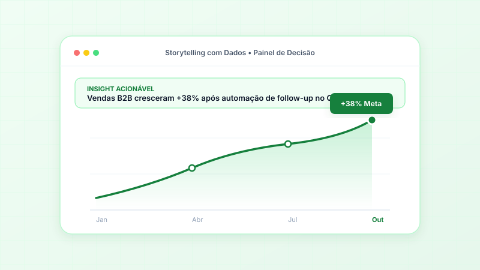

Data Visualization
6 min
Storytelling com Dados: 5 Princípios para Transformar Dashboards em Ações
Dashboards bonitos que ninguém utiliza são um desperdício de investimento. Descubra como aplicar carga cognitiva reduzida, atributos pré-atentivos e Action-Driven Design em relatórios executivos.
15 de Setembro de 2026
Ler